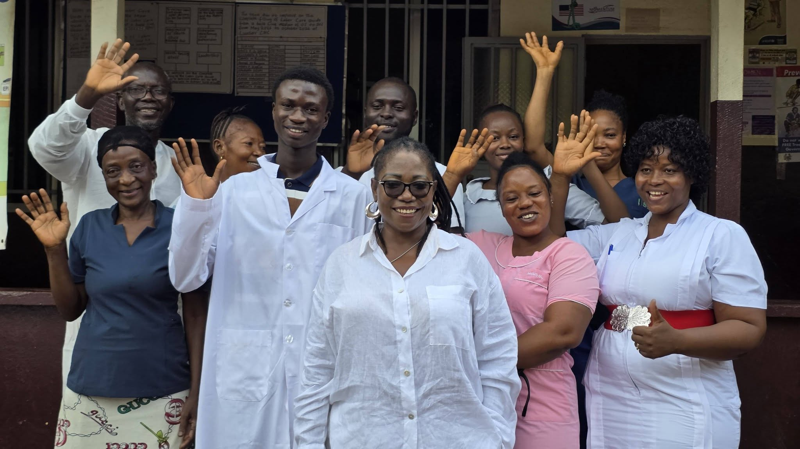

Health
Berny's Hope Foundation in partnership with S.A.T Koroma Foundation Donate Vital Medical Equipment to Lunsar Community Health Centre
In a significant boost to healthcare delivery in Lunsar, Berny's Hope Foundation, in partnership with The S.A.T Foundation, has donated essential medical equipment and financial support to the Lunsar Community Health Centre.